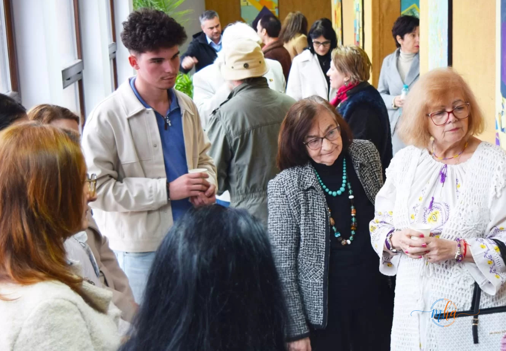
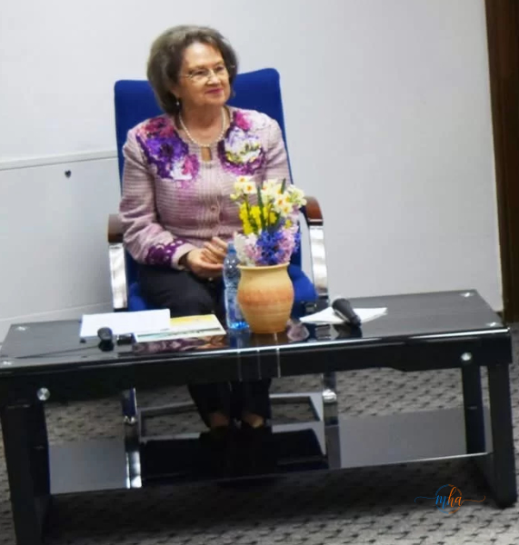
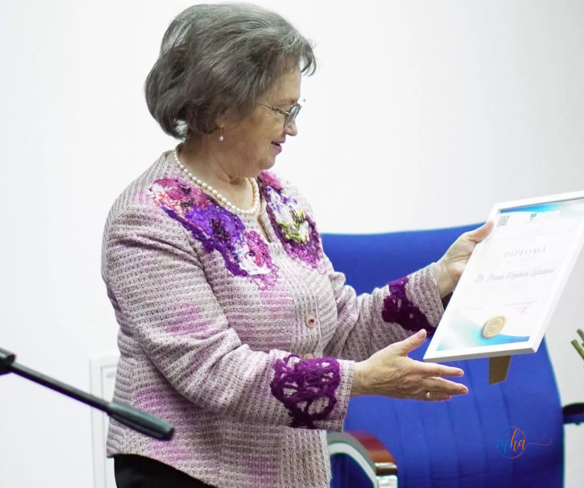

Participanți la cea de-a doua ediție a „Conferințelor Muzeului", Drobeta Turnu Severin, 27 martie 2026 | Foto: MehedintiAzi.ro
Muzeul Regiunii Porților de Fier din Drobeta Turnu Severin a găzduit, pe 27 martie 2026, cea de-a doua ediție a seriei „Conferințele Muzeului" — un eveniment de referință dedicat valorificării și protejării patrimoniului cultural imaterial al României.
Evenimentul se înscrie în seria de manifestări organizate sub egida programului „Zilele Alexandru Bărcăcilă — 150 de ani de la naștere", dedicat celebrării uneia dintre cele mai marcante personalități ale culturii și muzeografiei din regiune. Un cadru potrivit pentru o dezbatere despre ceea ce înseamnă să păstrezi viu trecutul într-o lume care se transformă rapid.
Doina Ișfănoni — vocea patrimoniului imaterial românesc

Doina Ișfănoni, conferențiar universitar, cercetător etnolog și istoric de artă, la Muzeul Regiunii Porților de Fier din Drobeta Turnu Severin | Foto: MehedintiAzi.ro
Invitata specială a întâlnirii a fost Doina Ișfănoni, conferențiar universitar, cercetător etnolog și istoric de artă, unul dintre cei mai respectați specialiști români în domeniul patrimoniului cultural imaterial. Aceasta a susținut o prezentare de mare densitate intelectuală, cu tema „Problematica tezaurizării patrimoniului cultural imaterial" — o incursiune lucidă și aprofundată în complexitatea conservării a ceea ce nu poate fi atins, dar poate fi pierdut pentru totdeauna.
„Patrimoniul cultural imaterial nu trăiește în vitrine — trăiește în oameni, în gesturi, în cuvinte, în cântec. Provocarea noastră este să îl tezaurizăm fără să îl încremenească."
Prezentarea a abordat cu rigoare academică și sensibilitate culturală provocările actuale legate de conservarea tradițiilor, obiceiurilor și valorilor culturale transmise din generație în generație, dar și rolul instituțiilor — muzee, universități, autorități publice — în protejarea acestui patrimoniu viu.
De ce contează patrimoniul imaterial — și de ce este în pericol
Spre deosebire de patrimoniul material — clădiri, artefacte, monumente — patrimoniul cultural imaterial cuprinde tradițiile orale, practicile sociale, ritualurile, festivalurile, meșteșugurile tradiționale și cunoștințele despre natură și univers, transmise de la om la om, de la generație la generație. El nu există în afara oamenilor care îl poartă.
Tocmai de aceea este și cel mai fragil. Dispariția unui meșteșugar, uitarea unui obicei, ruptura dintre generații — fiecare dintre acestea poate însemna stingerea ireversibilă a unei forme de expresie culturală. Tezaurizarea — adică înregistrarea, documentarea și punerea în valoare a acestui patrimoniu — devine, în acest context, un act de urgență culturală.

Momentul conferinței susținute de Doina Ișfănoni la Muzeul Regiunii Porților de Fier | Foto: MehedintiAzi.ro
Diplomă de Excelență pentru Doina Ișfănoni

Doina Ișfănoni prezentând lucrarea, înainte de a primi Diploma de Excelență din partea organizatorilor | Foto: MehedintiAzi.ro
La finalul întâlnirii, într-un gest de recunoaștere binemeritat, organizatorii i-au acordat Doinei Ișfănoni o Diplomă de Excelență, în semn de apreciere pentru contribuția sa remarcabilă la cercetarea și promovarea patrimoniului cultural românesc. Distincția vine să onoreze o carieră dedicată integral înțelegerii și salvgardării identității culturale a României.
„Zilele Alexandru Bărcăcilă" — 150 de ani de la nașterea unui titan al culturii regionale
Conferința face parte din programul „Zilele Alexandru Bărcăcilă — 150 de ani de la naștere", o serie de manifestări culturale dedicate memoriei și moștenirii unuia dintre cei mai importanți muzeografi și istorici ai regiunii. Alexandru Bărcăcilă a fost un pionier al cercetării arheologice și etnografice din zona Porților de Fier, iar omagierea sa la 150 de ani de la naștere reprezintă un act firesc de recunoaștere a valorii sale pentru cultura mehedințeană și românească.
Prin astfel de evenimente, Muzeul Regiunii Porților de Fier își reafirmă rolul nu doar de instituție custode a trecutului, ci de spațiu viu de dezbatere și educație culturală, deschis comunității și conectat la marile teme ale patrimoniului național.